🐱 梅林路由器 MerlinClash（Magic Catling 2） 插件配置指南 (2026 版)¶
开始前必读（防错检查）
为了确保路由器代理服务能稳定接管您的全屋网络（尤其是电视、游戏主机等），在配置前，请务必确认：
- ✅ 时间同步： 浏览器访问 time.is 检查设备时间是否与北京时间完全同步。
- ✅ 有效订阅： 确保您的 翻儿Cloud 会员套餐未过期且流量充足。
- ✅ 环境纯净： 请暂时关闭设备上的其他 VPN 类软件，避免多层代理端口冲突。
- ✅ 网络类型： 确保您的网络不是严苛的校园网或企业内网。
📌 1. 插件简介与固件支持¶
MerlinClash (Magic Catling 2小猫咪) 插件简介
本插件专供基于 asuswrt、asuswrt-merlin 且带软件中心（KoolCenter，版本 ≥384）的路由器使用。相较于传统插件，MerlinClash 的分流规则更智能，特别适合家里有 Apple TV、Android TV 等流媒体设备的用户。
- 👉 新手扫盲： 如何刷官改/梅改固件及安装插件？请看：➡️ 梅林固件与 MerlinClash 刷机指南 ⬅️
- 👉 相关资源： 魔法 MC 官方文档
2026 版本说明
本教程仅适用于已成功安装 MerlinClash(Magic Catling 2) 插件的用户。演示环境基于 KoolShare 固件 axhnd.675x 平台机型 386 版本。随着内核（如 Clash.Meta）的迭代，部分界面可能微调，请以实际显示为准。
🔗 2. 获取并导入翻儿Cloud订阅¶
第一步：关闭冲突插件¶
「MerlinClash/Magic Catling 2」 和 「科学上网」 插件由于底层路由机制冲突，绝不能同时启用！请确保在配置本插件前，彻底关闭原有的科学上网插件。
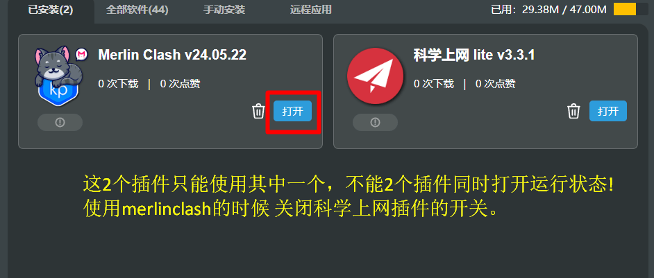
第二步：获取 翻儿cloud Clash订阅¶
- 浏览器访问并登录 翻儿Cloud 官方控制台。
- 在「首页」右下角的便捷导入区，点击 「手动复制 ClashX 订阅」（或复制 Clash 订阅链接）。 (💡 防失联提示： 若遇到官网被墙无法访问，请务必收藏并访问我们的永久发布页：https://get.imfaner.com/ 获取最新可用地址。)
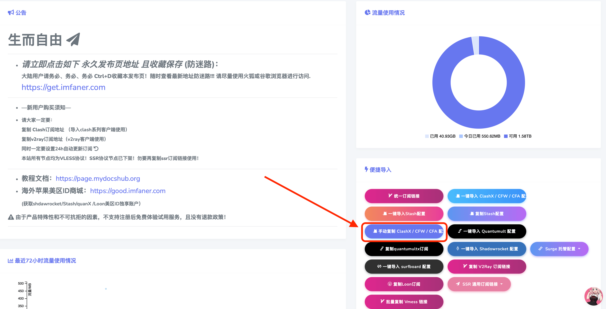
第三步：在路由器中下载 YAML 配置¶
-
从路由器左下角的软件中心进入
Merlin Clash/Magic Catling 2插件。 -
切换到 『订阅管理』 选项卡。⚠️
-
在右侧文本框中粘贴您刚才复制的翻儿Cloud专属Clash订阅链接。
-
节点覆盖/包含节点/排除节点/订阅 UA，没有特殊需求保持默认即可。
-
定时更新（更新订阅）：自行选择更新订阅的周期，默认保持3天或者一天。
-
订阅规则：自行选择所需规则。
-
订阅名称： 填入方便识别的名称（例如
ifanrCloud）。 -
点击右侧的 『开始订阅』 按钮，开始拉取节点。
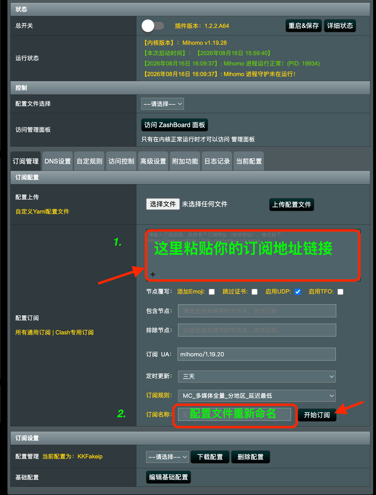
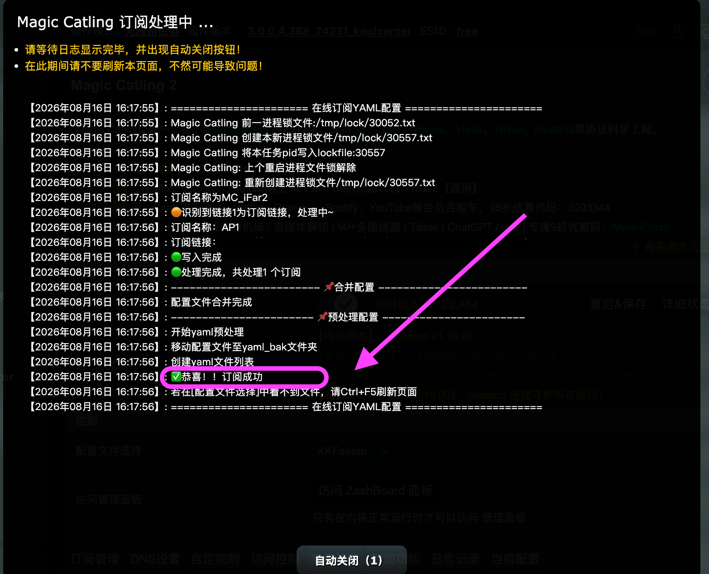
⏳ 温馨提示： 初次订阅时，路由器需要下载并在本地解析大量节点数据，耗时可能较长，请耐心观察下方“实时日志”直到提示 “ ✅恭喜!!订阅成功!!! ”。
🚀 3. 启动 MerlinClash(Magic Catling 2) 与面板管理¶
1. 核心参数配置与启动¶
-
切换回 『首页』 选项页。
-
配置文件选择： 下拉选中刚才生成的
ifanrCloud。 -
DNS设置： 强烈建议选择
Fake-ip模式（解析速度最快，相当于路由器的 TUN 模式）。 -
总开关：向右滑开启即可。如果没有报错会提示 ✅恭喜！开启MerlinClash成功！
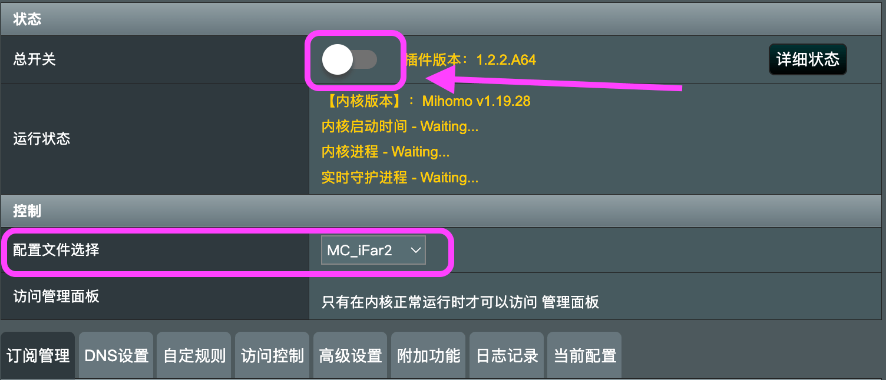
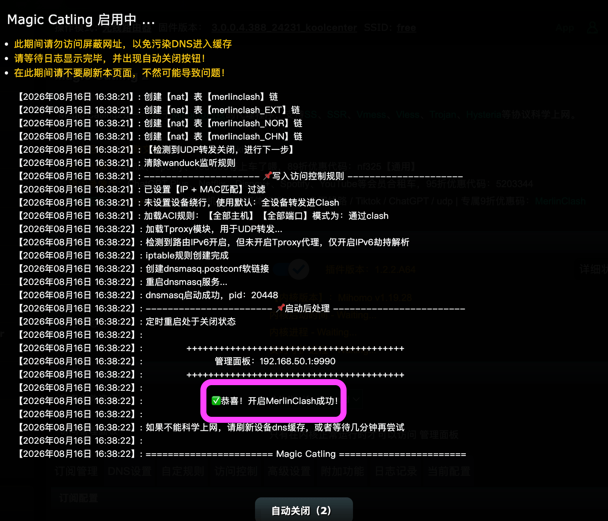
2. Magic Catling 2开启状态解读：¶
成功启动后，界面展示的 “插件版本号，Mihome内核版本，运行状态：mihome进程运行正常....” 则表示 已成功开启代理！
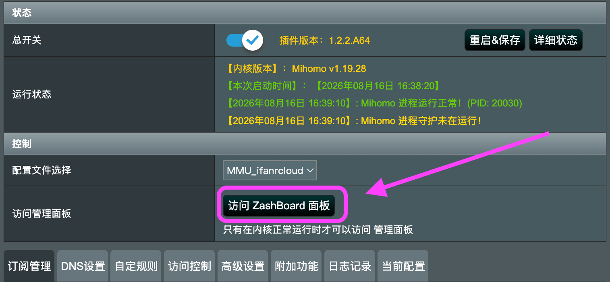
3. 进入 ZashBoard 面板管理策略组分流规则与节点组¶
成功启动插件后，所有节点的切换与规则管理均通过 ZashBoard 面板完成！ 点击界面上的 『ZashBoard面板』 可视化地完成代理模式切换和节点选择（与电脑端的 Clash Verge 体验完全一致）
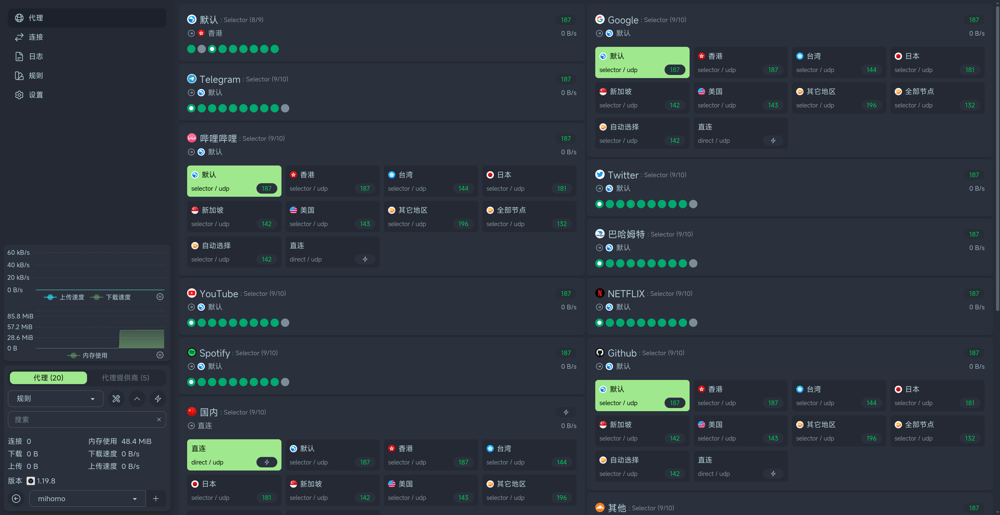
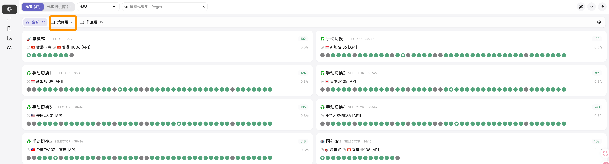
🔄 4. 配置文件手动更新订阅/延迟测试¶
中国大陆防火墙（GFW）时刻在变，建议开启定时更新，以保证翻儿Cloud节点的高可用性。
-
自动定时更新 (默认3天/1天自动更新订阅)
-
手动管理与更新-zashboard管理面板
-
在 『代理供应商』 页面。
- 点击 “旋转箭头🔄图标” 按钮即可手动拉取/更新订阅。
- 点击 “闪电⚡️图标” 按钮延迟测试节点的连通性。
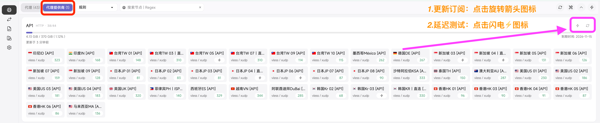
📥5. 附加功能：Geo数据库、白名单规则与备份MC2配置¶
##### 1.Geo 数据库（GeoIP / GeoSite 数据库）
- 建议每个月手动点击更新一次，或者在配置好后更新一次，保证分流更加精准。
2.更新大陆 IP 白名单规则¶
- 定期点击更新，确保国内流量能精准走“直连绿色通道”，保证国内网页和游戏顺畅。
3.备份MC2配置¶
-
Magic Catling 2 订阅配置好了，点击下载备份便于下次更新MC2插件版本直接恢复备份！
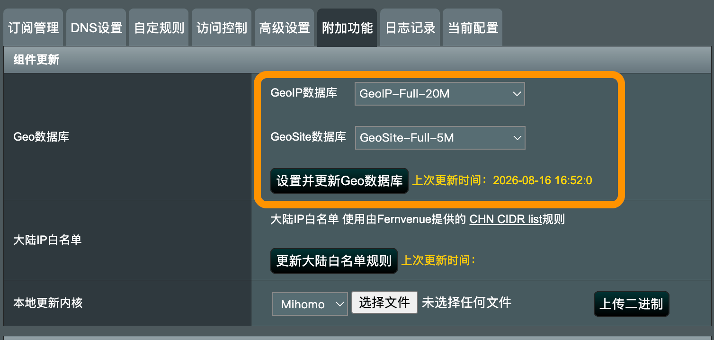
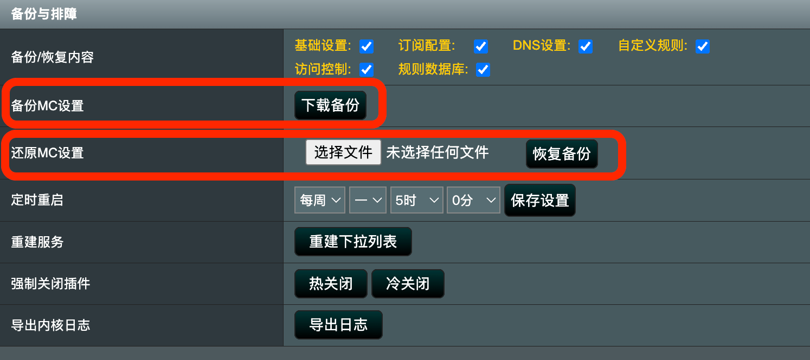
💡 原理解析：
GeoSite（域名数据库）：记录了世界上所有网站的网址（域名）分别属于哪个国家或哪个服务商（比如哪些是 Google、Netflix，哪些是淘宝、B站）。 GeoIP（IP数据库）：记录了世界上所有的网络地址（IP）分别物理定位在哪个国家。 大陆 IP 白名单规则：这是一份“国内绿色通道名单”。 它专门收集了中国大陆境内所有网络运营商（电信、联通、移动等）所拥有的网络地址（IP）。只要你在访问名单上的这些国内地址，路由器就会命令流量直接连接，绝对不走代理通道。
💡 温馨提示： 每次刚安装完插件，或者觉得最近有些平时能上的国内网站变卡、国外网站打不开时，都可以先来这个页面把这两项手动更新一下，通常能解决 80% 的分流异常问题。
🎬 6. 视频操作教程¶
如果您在配置过程中遇到困难，可以观看下方详细的视频教程：
YouTube 完整版图文视频教程
🛡️ 7. 账号隐私警告¶
严禁泄露订阅地址
您的订阅地址是您个人账号与流量凭证的总集成！为了保护您的财产安全：
- 绝对不要将订阅链接或节点二维码发到任何微信群、QQ群、贴吧或论坛。
- 建议在路由器中设置好“自动更新订阅”后即“阅后即焚”，切勿随意分享给他人使用，以免触发账号防滥用机制导致封停。